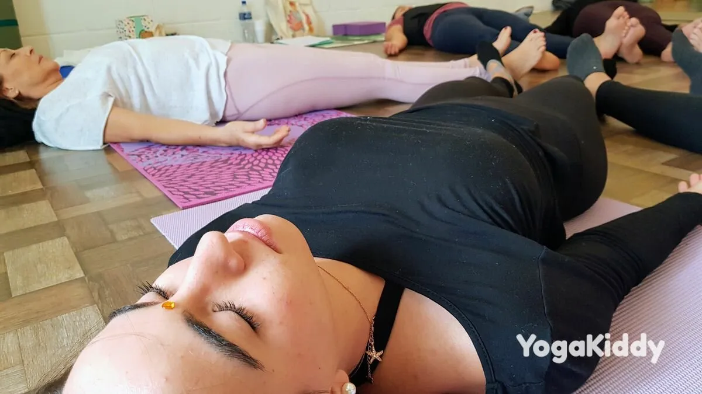

¿Alguna vez has sentido que has perdido el contacto con tu niño interior, esa parte tuya de espíritu libre, imaginativa y aventurera? Nuestras ajetreadas vidas pueden hacer que nos sintamos desconectados de nuestro verdadero yo, pero nunca es tarde para volver a conectar. Si te tomas un momento para conectar con tu niño interior, podrás reavivar tus pasiones, redescubrir tu sentido del juego y aportar una renovada sensación de alegría y libertad a tu vida.
Meditación profunda para conectar con el niño interior
Busca un lugar tranquilo y cómodo para sentarte o tumbarte donde no te molesten.
Cierra los ojos e inspira profundamente por la nariz y espira por la boca. Repite esta respiración profunda varias veces hasta que empieces a sentirte relajado.
Imagínate caminando por un sendero y ves a un niño jugando a lo lejos. Este niño es su niño interior.
- Al acercarte a tu niño interior, intenta sentir su alegría y entusiasmo. Deja que su energía te llene.
- Tómate un momento para darte cuenta de lo que está haciendo tu niño interior e intenta unirte a él. Quizá esté jugando con juguetes, saltando en una cama elástica o simplemente corriendo.
- Deja volar tu imaginación y juega con tu niño interior. Recuerda cómo te sentías cuando jugabas sin preocuparte de nada.
- Tómese un momento para reflexionar sobre las pasiones e intereses de su niño interior. ¿Qué te gustaba hacer de niño? ¿Con qué juegos disfrutaba? ¿Qué te gustaba crear?
- Mientras sigues jugando y divirtiéndote con tu niño interior, respira hondo y trae esa sensación de alegría y libertad a tu momento presente.
- Cuando estés preparado, abre lentamente los ojos y respira hondo varias veces. Recuerda llevar contigo esta conexión con tu niño interior durante todo el día.
Esta meditación puede ser una poderosa herramienta para conectar con tu niño interior y reavivar tu pasión y alegría de vivir. Practícala con regularidad y descubrirás que te sientes más conectado con tu yo interior y más inspirado para perseguir tus sueños.